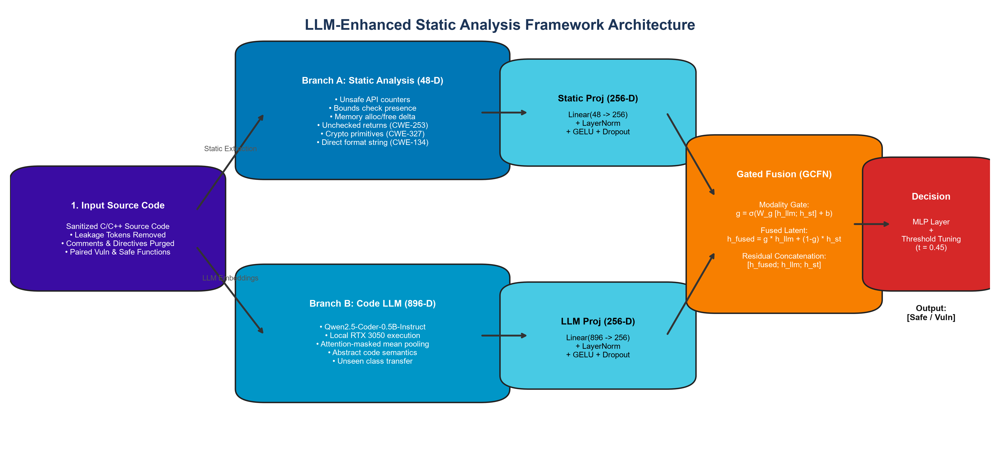
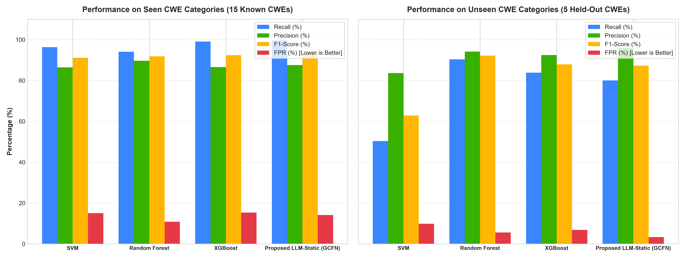
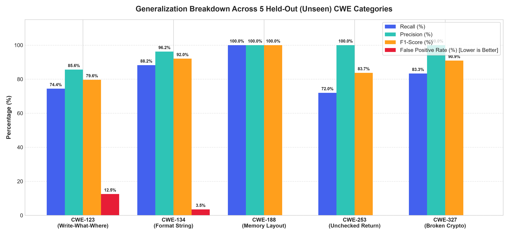
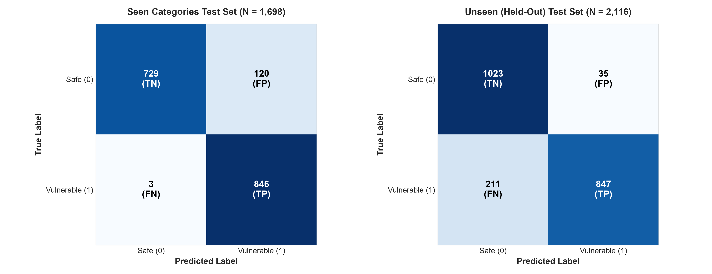

A dual-modality framework combining domain-informed static code analysis with localized Code LLM representations to detect known vulnerabilities and generalize to unseen CWE categories.


| Evaluation Split | Model | Recall (%) | Precision (%) | F1-Score (%) | FPR (%) | Accuracy (%) |
|---|---|---|---|---|---|---|
| Seen CWEs (15 Classes) | SVM | 96.35% | 86.47% | 91.14% | 15.08% | 90.64% |
| Random Forest | 94.11% | 89.67% | 91.84% | 10.84% | 91.64% | |
| XGBoost | 99.06% | 86.61% | 92.42% | 15.31% | 91.87% | |
| Proposed GCFN (Ours) | 99.65% | 87.58% | 93.22% | 14.13% | 92.76% | |
| Unseen CWEs (5 Held-Out Classes) | SVM (Collapsed) | 50.38% | 83.67% | 62.89% | 9.83% | 70.27% |
| Random Forest | 90.36% | 94.19% | 92.23% | 5.58% | 92.39% | |
| XGBoost | 83.84% | 92.49% | 87.95% | 6.81% | 88.52% | |
| Proposed GCFN (Ours) | 80.06% | 96.03% | 87.32% | 3.31% | 88.37% |

